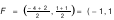
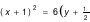
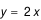
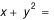
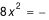
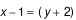
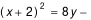
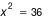

Section 4.3 Parabolas
By the end of this section, you should |
Subsection 4.3.1 Definition of a Parabola
| Definition 4.3: Let L be a fixed line and F be a fixed point not on the line, both lying on the plane. A parabola is a set of points equidistant from L and F. The line L is called the directrix and the fixed point F is called the focus of the parabola. |
This definition is illustrated by Figure 4.12.
|
Letting |VF | = p, you may show that |BB′| = 4p; i.e., focal width is 4 times focal length.
If P(x,y) is any point on the parabola, then by the definition, the distance of P from the directrix is equal to the distance between P and the focus F. This is used to determine an equation of a parabola. To do this, we consider first the cases when the axis of the parabola is parallel to one of the coordinate axes.
Exercise 4.3.1
|
Use the definition of parabola and the given information to answer or solve each of the following problems.
1. Suppose the focal length of a parabola is p, for some p > 0. Then, show that the focal width (length of the latus rectum) of the parabola is 4p.
2. Suppose the vertex of a parabola is the origin and its focus is F(0,1). Then,
(a) What is the focal length of the parabola.
(b) Find the equations of the axis and directrix of the parabola.
(c) Find the endpoints of the latus rectum of the parabola.
(d) Determine whether each of the following point is on the parabola or not.
(i) (4, 4) (ii) (2, 2) (iii) (−4, 4) (iv) (4, −4) (v) (1, 1/4)
(Note: By the definition, a point is on the parabola iff its distances from the focus and from the directrix are equal. )
3. Suppose the vertex of a parabola is V(0, 1) and its directrix is the line x = −2. Then,
(a) Find the equation of the axis of the parabola.
(b) Find the focus of the parabola.
(c) Find the length and endpoints of the latus rectum of the parabola.
(d) Determine whether each of the following point is on the parabola or not.
|
|---|
| (i) (1, 0) (ii) (3, 0) (iii) (8, 9) (iv) (8, −7) (v) (8, 8) |
Subsection 4.3.2 Equation of Parabolas
I: Equation of a parabola whose axis is parallel to the y-axis:
A parabola whose axis is parallel to y-axis is called vertical parabola. A vertical parabola is either open upward (as in Figure 4.13 (a) ) or open downward (as in Figure 4.13 (b)).
Let p be the distance from vertex V(h,k) to the focus F of the parabola, i.e.,|VF| = p. Then, by the definition, F is located p units above V if the parabola opens upward and it is located p units below V if the parabola opens downward as indicated on Figure 4.13(a) and (b), respectively. To determine the desired equation, we first consider the case when the parabola opens upward.
Therefore, considering a vertical parabola with vertex V(h,k) that opens upward (Figure 4.13a), its focus is at F(h, k+p). ⇒ The equation of its directrix is y = k−p.
Then, for any point P(x,y) on the parabola, |PF| is equal to the distance between P and the directrix if and only if
Upon simplification, this becomes
|
called standard equation of a vertical parabola,
vertex (h, k), focal length p, open upward.
|
In particular, if the vertex of a vertical parabola is at origin, i.e., (h, k) =(0,0) and opens upward, then its equation is
( In this case, its focus is at F(0, p), and its directrix is y =−p )
If a vertical parabola with vertex V(h, k) opens downward, then its directrix is above the parabola and its focus lies below the vertex (see Figure 4.13(b). In this case,
the focus is at F(h, k−p), and its directrix is given by y=k+p. Moreover, following the same steps as above , the equation of this parabola becomes
|
( Standard equation of a vertical parabola,
open downward, vertex (h, k) , and focal length p . )
|
In particular, if the vertex of a vertical parabola is at origin, i.e., (h, k) =(0,0) and opens downward, then its equation is
( In this case, its focus is at F(0,−p), and its directrix is y = p )
Example 4.14: Find the vertex, focal length, focus and directrix of the parabola y = x2.
Solution: The given equation, x2 = y, is the standard equation of the parabola with vertex at origin (0,0) and 4p =1 ⇒ its focal length is p = 1/4. Since the parabola opens upward, its focus is p units above its vertex ⇒ its focus is at F(0,1/4); and its directrix is horizontal line p units below its vertex ⇒ its directrix is y = −1/4. You may sketch this parabola.
Example 4.15: If a parabola opens upward and the endpoints of its latus rectum are at A(−4, 1) and B(2, 1), then find the equation of the parabola, its directrix and sketch it.
Solution: Since the focus F of the parabola is at the midpoint of its latus rectum AB, we have

, and focal width ⇒ focal length p = 3/2. Moreover, as the parabola opens upward its vertex is p units below its focus. That is,V (h, k) = ( −1, 1−3/2) = ( −1, −1/2). Therefore, the equation of the parabola is

.And its directrix is horizontal line p units below its vertex, which is y = −1/2 −3/2 = −2.
The parabola is sketch in the Figure 4.14 .
II: Equation of a parabola whose axis is parallel to the x-axis.
A parabola whose axis is parallel to x-axis is called horizontal parabola. Such parabola opens either to the right or to the left as shown in Figure 4.15 (a) and (b), respectively.
The equations of such parabolas can be obtained by interchanging the role of x and y in the equations of the parabolas discussed previously. These equations are stated below. In both cases, let the vertex of the parabola be at V(h,k).
- If a horizontal parabola opens to the right (as in Fig.4.15(a) ), then its focus is to the right of V at F(h+p, k), its directrix is x =h−p, and its equation is
- If a parabola opens to the left (as in Figure 4.15 (b) ), then its focus is to the left of V at F(h−p,k), its directrix is x=h+p , and its equation is:
If the vertices of these parabolas are at the origin (0,0), then you can obtain their corresponding equations by setting h=0 and k=0 in the above equations.
Example 4.16: Find the focus and directrix of the parabola and sketch its graph.
Solution: The equation is ; and comparing this with the above equation, it is an equation of a parabola whose vertex is at (0,0), axis of symmetry is the x-axis, open to the left and 4p=10, i.e., p=5/2. Thus, the focus is F=(–5/2,0) and its directrix is x =5/2. Its graph is sketched in Figure 4.16.
Example 4.17: Find the focus and directrix of the parabola y2 + 4y + 8x – 4 = 0 and sketch it.
Solution: The eaquation is y2 +4y = –8x +4. ( Now complete the square of y-terms)
⇒ y2 + 4y+22 = –8x +4+4
⇒ (y +2)2 = –8x +8
⇒ (y + 2)2 = –8(x –1)
This is equation of a parabola with vertex at (h, k)=(1,–2), open to the left and focal length p, where 4p=8 ⇒ p=2. Therefore, its focus is
F= (h–p, k) = (–1, –2), and directrix x=h+p =3. The parabola is sketched in Figure 4.17.
|
Remark:- An equation given as: Ax2 + Dx + Ey + F = 0
or Cy2 + Dx + Ey + F = 0
may represent a parabola whose axis is parallel to the y-axis or parallel to the x-axis, respectively. The vertex, focal length and focus for such parabolas can be identified after converting the equations into one of the standard forms by completing the square.
|
Exercise 4.3.2
|
For questions 1 to 8, find an equation of the parabola with the given properties and sketch its graph.
1. Focus (0, 1) and directrix y = −1. 5. Vertex (3, 2 ) and Focus (3, 3).
2. Focus (−1, 2) and directrix y =−2. 6. Vertex (5, −2 ) and Focus (−5, −2).
3. Focus (3/2, 0) and directrix x = −3/2. 7. Vertex (1, 0) and directrix x = −2.
4. Focus (−1,−2) and directrix x = 0. 8. Vertex (0, 2) and directrix y = 4.
For questions 9 to 17 find the vertex, focus and directrix of the parabola and sketch it.
9.
 12.  15.
10 .
 13.  16. y2 – 2y – 4x + 9= 011. 4x − y2 = 0 14.
 17.
18. Find an equation of the parabola that has a vertical axis, its vertex at (1, 0) and passing through (0,1).
19. The vertex and endpoints of the latus rectum of the parabola
 forms a triangle. Find the area of the triangle.20. P(4, 6) is a point on a parabola whose focus is at (0, 2) and directrix is parallel to x-axis. (a) Find an equation of the parabola, its vertex and directrix.
(b) Determine the distance from P to the directrix.
21. An iron wire bent in the shape of a parabola has latus rectum of length 60cm. What is its focal length?
22. A cross-section of a parabolic reflector is shown in the figure below. A bulb is located at the focus and the opening at the focus, AB, is 12 cm. What is the diameter of the opening, CD, 8 cm from the vertex?
|